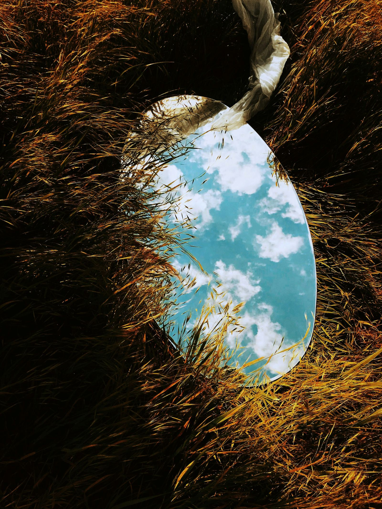

Discover the village of Viganella in Piedmont, where the sun disappears for months during winter. A large mirror mounted on the mountain reflects sunlight, providing six hours of light per day. An example of human ingenuity to counter long days of darkness.
Scopri il villaggio di Viganella nel Piemonte, dove il sole scompare per mesi durante l'inverno. Un grande specchio montato sulla montagna riflette la luce solare, portando sei ore di luce al giorno. Un esempio di ingegno umano per contrastare i lunghi giorni di buio. Durante l'inverno il sole sparisce per diversi mesi a causa delle montagne circostanti.

Questo borgo di soli 207 abitanti ha trovato una soluzione davvero innovativa: ha installato uno specchio alto 40 metri sulla montagna di fronte al paese. Questo specchio, noto localmente come "specchio del sole", è in grado di riflettere la luce solare verso il paese, permettendo di godere di circa sei ore di luce al giorno durante i mesi invernali, contrastando così i lunghi giorni di buio che durano fino a 83 giorni consecutivi.
Questa iniziativa ha attirato l'attenzione a livello nazionale e internazionale, poiché rappresenta un esempio eccellente di creatività e ingegno umano nel trovare soluzioni pratiche per sfide ambientali uniche.

Viganella è diventato un luogo noto per la sua ingegnosa soluzione al problema della mancanza di sole durante l'inverno, dimostrando come la tecnologia e la determinazione possano migliorare la qualità della vita anche in luoghi remoti e inusuali.
fonte: Viganella: il curioso villaggio del Piemonte dove il Sole arriva da uno Specchio
Parole chiave
| Villaggio | Un piccolo insediamento abitativo. |
| Piemonte | Regione nel nord Italia. |
| Sole | La stella luminosa che illumina la Terra. |
| Scomparire | Non essere più visibile. |
| Mesi | Periodi di tempo lunghi di circa 30 giorni. |
| Inverno | La stagione fredda dell'anno. |
| Specchio | Oggetto che riflette la luce. |
| Montagna | Grande rilievo naturale, più alto di una collina. |
| Riflettere | Mandare indietro la luce o il suono. |
| Luce solare | La luce proveniente dal sole. |
| Giorno | Periodo di luce durante il quale il sole è visibile. |
| Ingegno umano | La capacità dell'uomo di trovare soluzioni. |
| Buio | Assenza di luce. |
Esercizio
Domande
- Perché il sole scompare a Viganella durante l'inverno?
- Come è stato risolto il problema della mancanza di sole a Viganella?
- Qual è la funzione dello specchio?
- Quante ore di luce al giorno può godere Viganella grazie allo specchio?
- Perché l'iniziativa di Viganella ha attirato l'attenzione?